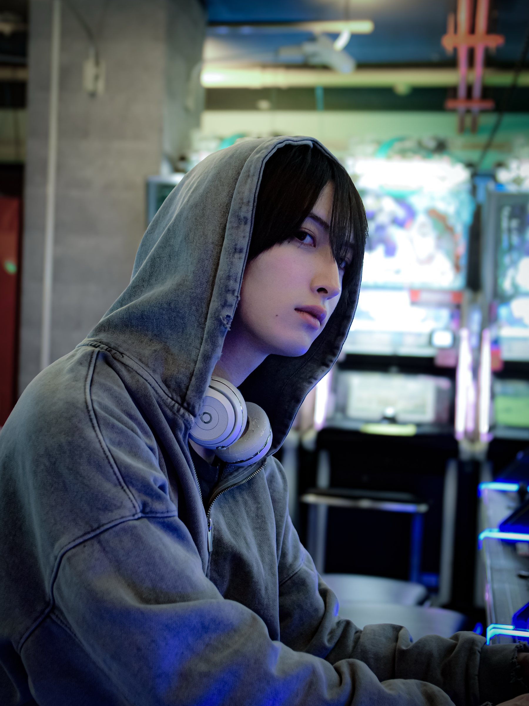
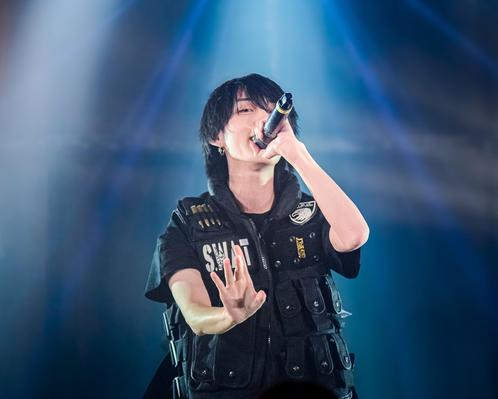

SCROLL

01
About
プロフィール
未完成の挑戦者
何ができるかは、まだわからない。
だから、いろいろ試してみる。
つくる。失敗する。考える。またやってみる。
その先にある自分を、見てみたい。
- GROUP
- SKYXROS
- COLOR
- PURPLE
- BIRTHDAY
- 2002.4.5
- HEIGHT
- 166 cm
- HOMETOWN
- TOKYO
- HOBBY
- 読書

03
Diary
ゆる日記
noteに書いている日記の、最新の記事です。
READ ON NOTE （note）04
Photo
フォト
05
History
ヒストリー
4年〜SINCE 2022
2組GROUPS
2回SHANGHAI
2本TOUR FINALS
2026
SKYXROS 東五大都市ツアー ファイナル V
浅草花劇場
2025
LOKiNg LOVE vol.4 出演
中国・上海 西岸大劇院
2024
OLLKORRECT IDOL LIVE 3.0 出演
中国・上海 大世界
SKYXROS 東名阪ツアー ファイナル
duo MUSIC EXCHANGE
SKYXROS 3周年ワンマンライブにて新メンバーとして加入
上野飛行船シアター
2023
ミルキープラネット 解散
2022
ミルキープラネット 1stアルバム リリース
ミルキープラネットとしてデビュー